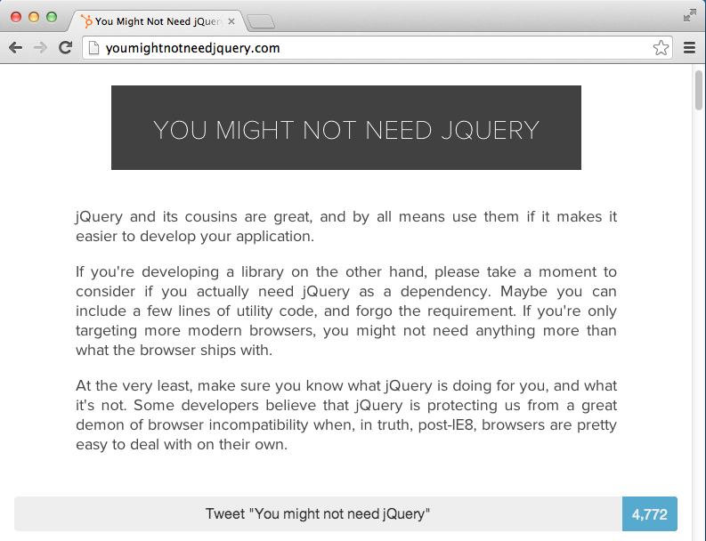
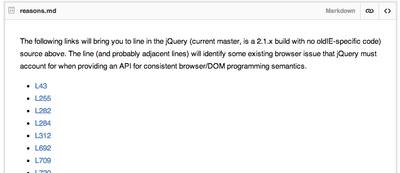
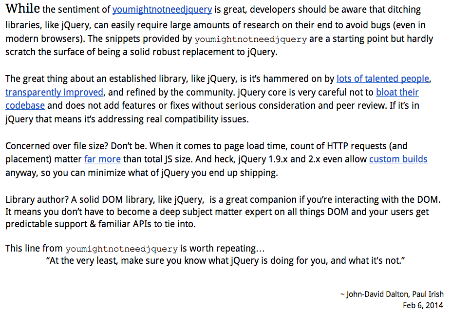
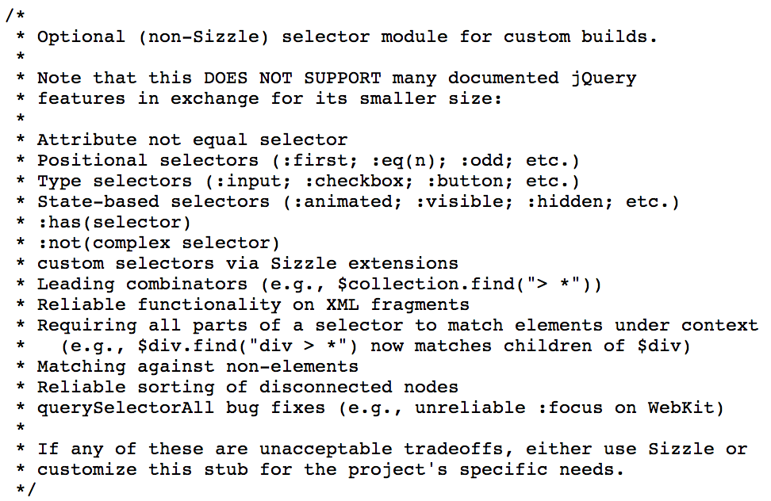
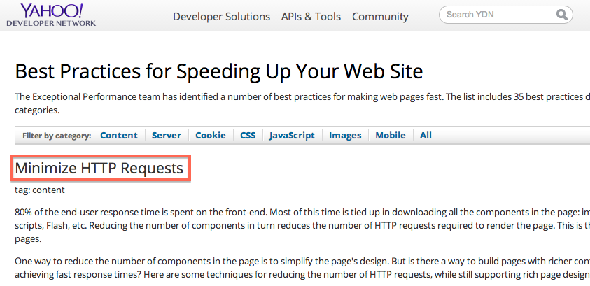

Making the Case for jQuery in a Browser Utopia
TJ VanToll
- http://tjvantoll.com
- @tjvantoll
-
Developer Advocate

-
Team Member


youmightnotneedjquery.com
jQuery isn't for everyone
- If you have a single button with a click handler, don't use jQuery.
- If you're writing a library, consider whether you really need jQuery as a dependency (just as you would any other library).
List of Current Fixes by @rwaldron
 https://gist.github.com/rwaldron/8720084#file-reasons-mdDefense from @jdalton & @paulirish
 https://docs.google.com/document/d/1LPaPA30bLUB_publLIMF0RlhdnPx_ePXm7oW02iiT6o/editjQuery is about a whole lot more than just normalizing browser behavior.
Browser Utopia
- All features implemented
- No bugs
My Points:
1) jQuery is worth using, even if (when?) it fixes 0 browser bugs.
2) jQuery is - and will continue to be - relevant for the majority of web applications.
<disclaimers>
I'm on the jQuery team.
I'm writing a book on jQuery UI.

manning.com/vantoll
</disclaimers>
Main anti-jQuery arguments:
-
API Parity
The native platform does everything now. -
Too Big / Bloated
File size is too big, especially for mobile. -
Performance
Native is faster.
Main anti-jQuery arguments:
-
API Parity
The native platform does everything now. -
Too Big / Bloated
File size is too big, especially for mobile. -
Performance
Native is faster.
Problems With DOM APIs
- Verbose and not easy to use
- Lots of gotchas
Problems With DOM APIs
- Verbose and not easy to use
- Lots of gotchas
Add a class name to all paragraphs (jQuery)
$( "p" ).addClass( "foo" );
Add a class name to all paragraphs
(wrong)
document.querySelectorAll( "p" ).classList.add( "foo" );
Add a class name to all paragraphs
(wrong)
document.querySelectorAll( "p" )
.forEach(function() {
this.classList.add( "foo" );
});
Add a class name to all paragraphs
(right)
var paragraphs = document.querySelectorAll( "p" );
for ( var i = 0; i < paragraphs.length; i++ ) {
paragraphs[ i ].classList.add( "foo" );
};
Add a class name to all paragraphs (right)
function find( selector ) {
return Array.prototype.slice.call(
document.querySelectorAll( selector )
);
}
find( "p" ).forEach(function( p ) {
p.classList.add( "foo" );
});
Problems With DOM APIs
- Verbose and not easy to use
- Lots of gotchas
Gotcha #1
<div>
<p>Hello World</p>
</div>
<script>
var div = document.querySelector( "div" );
console.log( div.firstChild );
</script>
Gotcha #1 - Answer
<div>
<p>Hello World</p>
</div>
<script>
var div = document.querySelector( "div" );
console.log( div.firstElementChild );
</script>
Gotcha #2
<div>
<p>Hello World</p>
</div>
<script>
var div = document.querySelector( "div" );
console.log( div.querySelectorAll( "> p" ) );
</script>
Result: Uncaught SyntaxError: Failed to execute query: '> p' is not a valid selector.
querySelectorAll cannot handle leading combinators.
>+~Gotcha #3
<div>
<p>Hello World</p>
</div>
<script>
var div = document.querySelector( "div" );
console.log( div.querySelectorAll( "div p" ) );
</script>
Result: NodeList[1] (<p>)
querySelectorAll's limitations
selector-native.js None of those examples were bugs; they're all specced behavior.
jQuery's APIs are easier to
- write
- maintain
- refactor
- debug
- test
- grep
- teach
- understand
- extend
Main anti-jQuery arguments:
-
API Parity
The native platform does everything now. -
Too Big / Bloated
File size is too big, especially for mobile. -
Performance
Native is faster.
jQuery Core File Size
(minified and gzipped)
- 1.11.0: 32.64 KB
- 2.1.0: 28.66 KB
Is that too big for mobile?
<script src="jquery.js"></script>At a high level, the browser:
- Downloads the script
- Parses / Executes the script
At a high level, the browser:
- Downloads the script
- Parses / Executes the script
Importance of reducing round trips
- In 2012, the average mobile RTT (Round Trip Time) time was 344ms in the US and 372ms in the UK.
- In 2012 the average mobile download throughput was 1.6 Mbps in the US and 1.4 Mbps in the UK.
Reducing round trips > Reducing file size
Yahoo's Performance Best Practices
http://developer.yahoo.com/performance/rules.html
Concatenate jQuery with your app's other scripts
<!-- before -->
<script src="jquery.js"></script>
<script src="app.js"></script>
<!-- after -->
<script src="app.js"></script>
Don't load jQuery from a 3rd party CDN.
<script src="//ajax.googleapis.com/ajax/libs/jquery/2.1.0/jquery.min.js"></script>
Three RTTs!
- DNS lookup
- TCP connection
- HTTP GET
Cache hits are rare. You must match on
- CDN provider (Google, Microsoft, jQuery)
- http vs. https
- Version number

(source)
At a high level, the browser:
- Downloads the script
- Parses / Executes the script
Parsing JavaScript files is a multiple-step process.
Text --> Bytes --> AST --> JIT Compilation -> Execution
Rough idea of parse times
<script>var start = new Date();</script>
<script>
/* jQuery's minified source code in its entirety */
</script>
<script>alert( new Date() - start );</script>
Raw data of 5 loads in each browser. Times are in ms.
Browser | jQuery 1.10.2 | jQuery 2.0.3
------------------------|--------------------------|-------------------------
IE 11 | 18, 20, 20, 20, 24 | 18, 21, 14, 16, 15
Chrome 31 | 20, 8, 6, 5, 7 | 15, 8, 5, 7, 6
Safari 7 | 11, 4, 4, 4, 4 | 9, 5, 3, 3, 2
Firefox 26 | 12, 13, 13, 12, 13 | 12, 12, 11, 12, 12
iOS7 Safari | 60, 39, 58, 56, 58 | 40, 32, 37, 69, 40
Android 2.2 | 1080, 266, 434, 271, 470 | 928, 264, 494, 315, 220
Android 4.0 | 531, 141, 153, 112, 105 | 453, 106, 104, 145, 148
Chrome 31 (Android 4.4) | 271, 126, 101, 68, 53 | 219, 86, 38, 86, 123The painfully slow parsing and interpretation of scripts on mobile browsers - particularly older Android ones - is the only compelling reason to prefer small JavaScript libraries.
Moore's Law
Moore's law is the observation that, over the history of computing hardware, the number of transistors on integrated circuits doubles approximately every two years.http://en.wikipedia.org/wiki/Moore's_law
Include only what you need
- AMD in jQuery, jQuery UI, jQuery Mobile, Kendo UI
There are more important things
- The average web site is now 1701KB (as of December 2013) (source).
- At 28.56KB, jQuery core is 1.67% of that.
Worry about the size of jQuery after you
- minify your assets,
- concatenate your assets,
- gzip your assets,
- set appropriate cache headers,
- remove unnecessary HTTP requests as much as possible (e.g. images)
...and you're still seeing performance issues
Main anti-jQuery arguments:
-
API Parity
The native platform does everything now. -
Too Big / Bloated
File size is too big, especially for mobile. -
Performance
Native is faster.
Remember, jQuery is an amazing library that makes all of our lives easier. But you should always choose to use native DOM methods if they are available to you.http://www.leebrimelow.com/native-methods-jquery/
Native methods will almost always be faster, but in the vast, vast, VAST majority of situations it doesn't matter.
Premature optimization is the root of all evil.-Donald Knuth
I tried using the browser’s native innerHtml and getElementByClassName API methods instead of jQuery’s html and append. I thought native APIs might be easier for the browser to optimize and what I read confirmed that. But for whatever reason, it didn’t make much of a difference for Trello.http://blog.fogcreek.com/we-spent-a-week-making-trello-boards-load-extremely-fast-heres-how-we-did-it/
jQuery optimizes common code paths
sizzle.js// Easily-parseable/retrievable ID or TAG or CLASS selectors
var rquickExpr = /^(?:#([\w-]+)|(\w+)|\.([\w-]+))$/;
// Shortcuts
if ( (match = rquickExpr.exec( selector )) ) {
// Speed-up: Sizzle("#ID")
if ( (m = match[1]) ) {
...
}
// Speed-up: Sizzle("TAG")
} else if ( match[2] ) {
...
}
// Speed-up: Sizzle(".CLASS")
} else if ( (m = match[3]) && support.getElementsByClassName && context.getElementsByClassName ) {
...
}
}jQuery doesn't force you to use its APIs. If you detect a slow code path, switch to native methods.
$( "div" ).each(function() {
this.classList.add( "red" );
});
$( "div" ).on( "click", function() {
this.classList.add( "red" );
});
Wrapping Up
My Points:
1) jQuery is worth using, even if (when?) it fixes 0 browser bugs.
2) jQuery is - and will continue to be - relevant for the majority of web applications.
write less, do more.